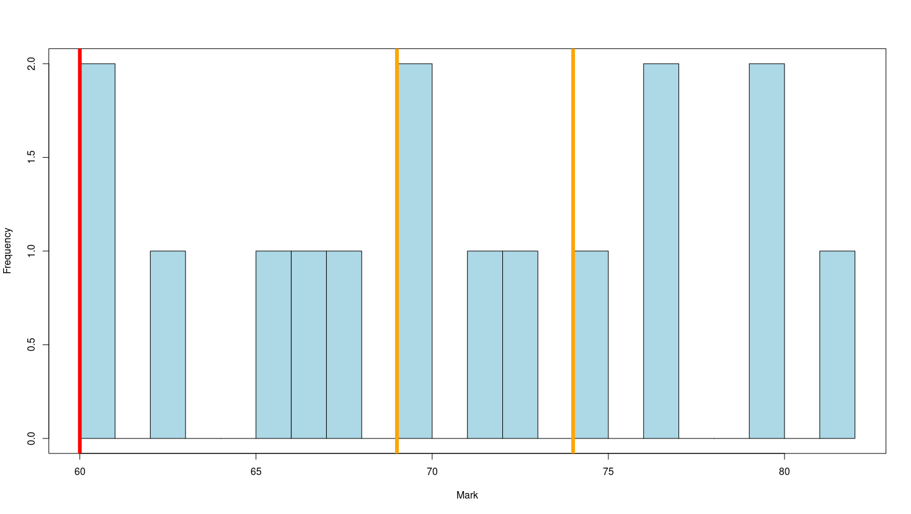

REM1 Feedback
Sep. 15, 2021
Thies Lindenthal
## General Remarks<span class="subtitle"><br/></span> * Apologies for slow turn-around! * Thanks for the interesting reports! - Huge variety of approaches. - Many specialised/personal/idiosyncratic arguments. - Ambitious angles * A lot of hard work was evident! * I hope the personalised feedback was helpful - Fully anonymous marking, I have no idea who produced a report * Challenge - Improve lines of argument and evidence-based reasoning... - ... while not killing off the creativity and ambition
## Distribution of marks<span class="subtitle"><br/>No fails, otherwise full range of marks.</span> 
## The task<span class="subtitle"><br/>(just to refresh our memory)</span> * The economic ramifications of the Covid pandemic: - a) hit real estate investments harder than investments in other mainstream asset classes, - b) diminished real estate’s role in mixed asset portfolios, and - c) will lead to more pronounced differences between the risk-return profiles of real estate sectors in the future."
## Guidance <span class="subtitle"><br/>(broadly matched to subquestions)</span> * Guidance - You should engage with qualitative and quantitative academic or industry research extensively. Clearly identify and use sources of relevant data such that it adds compelling evidence for the arguments made. [a-c] - Demonstrate a deep understanding of the drivers of investment returns for different real estate sectors [a]. - Demonstrate a deep understanding of the factors that influence real estate’s position in multi-asset investment portfolios relative to other asset classes. [b] - Include own empirical analysis that is thoughtfully applied to the research questions ("chose your angle wisely..."). [a or b or c] * How did we arrive at mark? - a + b + c + literature work + empirics/own research
## Literature work <span class="subtitle"><br/>Reading is research!</span> * Most were avid readers. Great! - Many comments on "effective/efficient use of literature". This saves time and space! - Is it OK if 90% of "my" findings have been shown by others before? YES! The last few % are the contribution! * Literature everywhere, not just in Lit. Review - "...link any results, wherever possible, back to the literature ('I find X which is in line with Y's finding...')" * Minor, but important - "You may use any referencing system, so this is only a suggestion: Name (Year) comes most natural in our field..." - (Note to self: make style compulsory next time)
## Empirics <span class="subtitle"><br/>Establishing causality / estimating correlations</span> * Identification is difficult (we try to teach you a bit more) * It's a dilemma: - Reliable identifcation is rare case. Limited to few, often not that interesting minor aspects. Typical - Great, big topics are usually not identifiable. "Effect of Covid?" Good luck * Acknowledge challenge, discuss a perfect case. Make concessions - and justify them. * Tackle question from several imperfect angles and aggregate evidence? * Economic story? * Empirically feasible? * This is difficult and needs time, skills and experience! Yes, we were lenient.
## Writing <span class="subtitle"><br/></span> * C-C-C: Context - Content - Conclusions * Emulate economic papers, not industry reports - Bullet - points - are - ugly. * Flow of argument is all-important. Bad story-telling kills the most beautiful regression. * Focus on tables and charts: 20/80 rule - They receive most of the attention. * Proofreading is for wimps. Not.